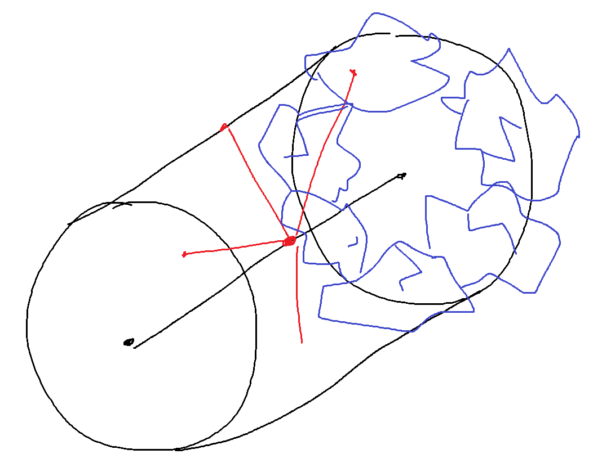
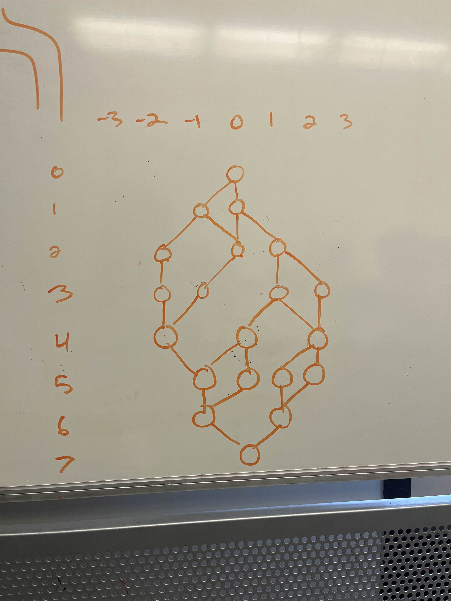
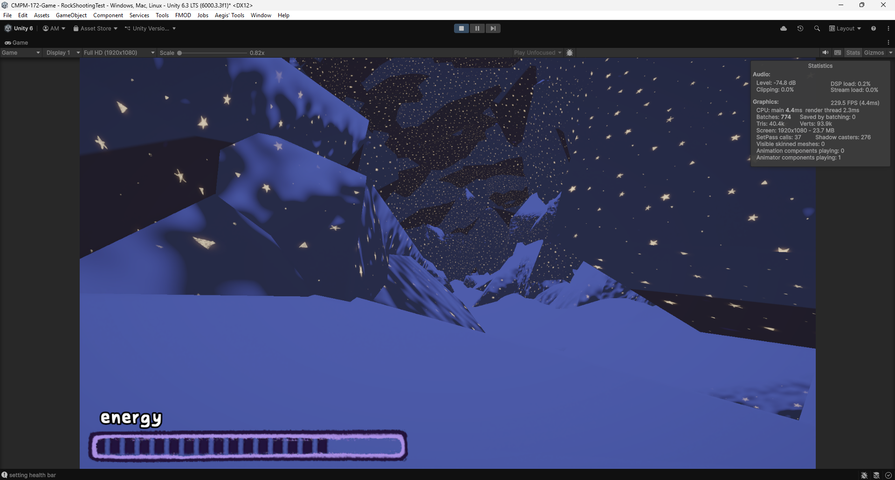
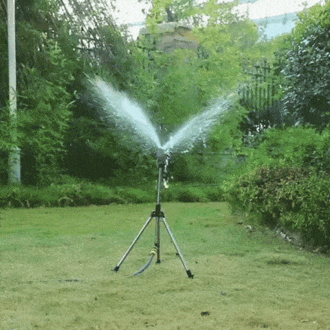
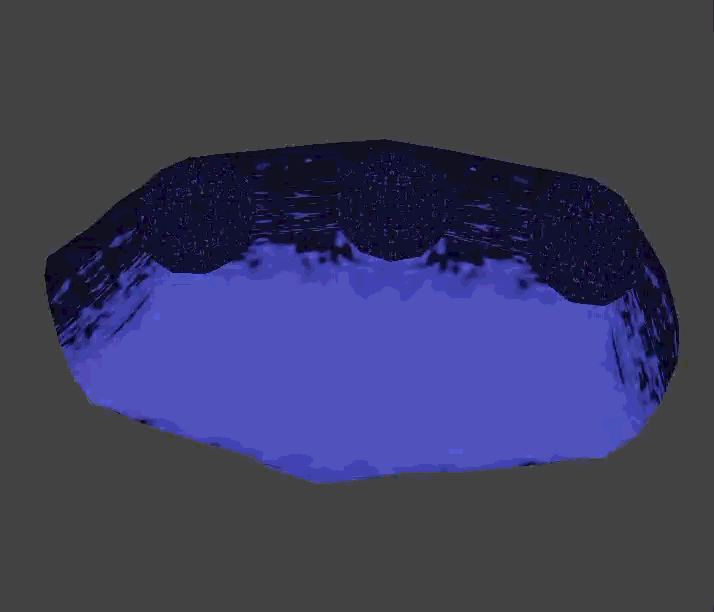
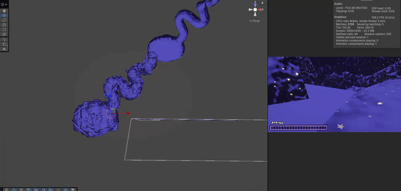
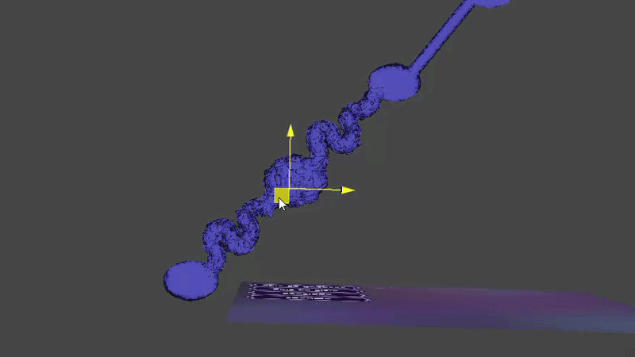

I'm currently working on a 3D "friendslop" game called stardozing. In this game, you play as a little star-bellied catbear, which looks a little something like this.

We knew pretty early that we wanted them to be customizable, as we're hoping to support players in
building a connection to their character and differentiate themselves from their friends, and
set up a fun and simple way to reward player's efforts.
At some point, I had the idea that the stars on the starbears' bellies could be randomized somehow,
and that they'd be tied to the Steam ID of each player. That way, they'd be completely personalized
for each player--and better yet, it'd be really enticing; "you've got a special star design waiting
for you and you won't know what it is until you give the game a try!"
Here's a little snippet from our Miro board.

Knowing I planned to use vertex displacement to make some funky star shapes, the first thing I did was hop into Blender and model some stars, making an object for four through eleven pointed stars.

Bringing them into Unity, I set up a little scene with a camera rendering to a render texture. Later on, I plan to make a copy of this texture on the actual starbear. For now, it just looks like we're about to listen to the Stone Temple Pilots.

Moving on, I set up a little shader that takes in an integer "seed" value, as well as two configurable parameters for the noise scale and offset, to displace each vertex of the star based on the seed input.

Next, I used the seed to randomly determine which star to activate. At this point, I realized that eight through eleven pointed stars look pretty awkward when randomly displaced, so I excluded them for now.

My next step was to connect that render texture to the starbear's star material, which put a funky shaped star on there, like this!

This is as far as I've got for now, as we're buckling on gameplay at the moment, but look forward to updates soon!
I'm currently a Technical Designer on stardozing, a 3D multiplayer 'friendslop' game about cave diving and throwing your friends around! As we ideated the
game and analyzed others of the same genre as we were getting started, we noted that procedural generation would be an absolute necessity for our game.
Taking after games like Peak and Lethal Company, map generation, paired with player interaction, are the two primary driving forces for gameplay variety and
replayability. We began development with this notion, and a great cave aesthetic/composition moodboard put together by our creative director,
Sofia Aminifard.

When it became time for us to actually start developing a map generator, we started by laying out some base goals.
No ‘Hard’ Dead-Ends
After some debate, we decided it’d be best if there was never a true dead-end that fully prevented players from continuing down their path. But,
inspired by Peak, we were more than happy with the idea of what we called a ‘soft’ dead end. With our future plans for
various movement strategies and items, our ideal map generator would never stop players from continuing if they were truly determined
and willing to expend enough resources.
Well Tuned
To achieve the replayability we were hoping for while maintaining our cave diving aesthetic experience and keep the game feeling focused,
we wanted just the right amount of randomness.
Modular
We’re very much in the process of ‘bottom up’ designing stardozing, and want to have the flexibility to pivot and expand on our map
generator as we see fit. For example, we already have plans forming for different biomes.
Deterministic
We want to ensure that, given a seed, we’ll always generate the same map. This is absolutely pivotal, as our
current plans for syncing maps between each player is to give them each the same seed, and trust that they generate the same map.
Fast
We don’t want to keep players waiting!
With our goals in mind, I began researching and ideating potential approaches to procedural map generation. My mind initially went to the true classic for terrain generation: using layered noise for a height map. I quickly ruled that out for the fatal flaw in that caves are roughly circular, and height maps don’t even allow for overhangs, let alone full cave systems.

That line of reasoning (and research) led me to my next potential idea: subtraction in a voxel grid to carve out a cave, paired with marching cubes triangulation to generate the actual playable space. This had some distinct advantages—subtractive generation seems to closely mirror cave formation via erosion, which could lead to some pretty convincing caves, like in Minecraft!
My main problem with that idea was that, honestly, I’ve never worked with voxel grids or runtime mesh generation. And this project, while
super fun, seemed at least intermediate in these fields, and I wasn’t confident I could deliver for my team on time. So, back to the drawing board.
Feeling a little aimless, I turned to our ol' faithful for inspiration and started looking into how Peak generates its map. That's when I stumbled
upon this thread on Reddit, which gave me a great idea!
Comment
by u/AggroCrab from discussion
in PeakGame
This gave me a really silly idea for adapting this process for cave generation--if we could figure out how to make a basic cave mesh, I could send a 'probe' down the cave system and shoot rocks in every direction with raycasts. With enough randomness, it'd turn out looking like a big rocky cave and more than likely have soft dead-ends, though we could prevent hard dead ends by keeping the tunnels all connected.

This idea had a little bit of everything. Though I'd never done anything like it, it seemed like a conceptually simple combination of many different things
that I already had experience with. It could definitely achieve our no 'hard' dead-ends goal, and to tackle modularity, I could have it send the probe down in
multiple passes, each time shooting with different, adjustable parameters.
Further exploring this idea, I brought it up with my friend and peer Ivy Dudzik, who, similarly excited about the
idea, came up with a rough sketch detailing a plan to place down pre-made tunnel meshes, combined with joints to
make branching paths.
Circling back with my team, I brought Ivy's idea to my fellow programmer, Julia Manou, and we sat down with a
whiteboard to flesh out this system using a branching and collapsing node graph.

With a strong plan to get started, Julia and I got to work, with them taking the node graph generation and I, the mesh generation.
My first step was setting up a tunnel mesh, then some kind of line moving down the tunnel for the probe to move in.
I used Unity's gizmo system to visualize the path, which was actually just a bunch of empty game objects' transforms,
using the white circles for each point and a red line for each edge. When I press play, it uses a yellow circle to visualize
the 'probe' moving down the tunnel, shooting rays in all directions.
After that, I buckled down on making those raycasts actually shoot rocks. After lots of work, this is where I ended up.
There's a couple of things going on here. I made two simple tunnel meshes in Blender and a simple collection of transforms to fill the tunnel's shape,
each represented by a white circle connect with red lines using Unity's gizmos.
In this early prototype, I already had set up my 'pass' system. The first shot flat wall rocks, then big round
rocks for variety next, then a final pass to clear up any 'holes' left from before. Note that the first pass shoots
regularly in all directions, the second regularly but only at the top of the tunnel, and the third only when it
'detects' a hole (when the raycast hits the tunnel mesh itself, and not another rock).
Another small thing I did was move through again at the end, and delete any rocks that intersect with the probe’s path to guarantee a technically
viable path through any tunnel.
With a little extra work, I configured our player spawner script to wait until procedural generation had
finished to spawn the player, and make sure the spawn point was always placed on the ground.

If the tunnels in our generator represent the edges of the node graph, the nodes themselves are what I call ‘joints.’ They’re shaped something
like a tortoise shell, a big flattened sphere with three entrances and three exits—in this case, with each hole corresponding to an incoming or
outgoing tunnel.
Because of their sphere-ish shape, I knew I’d have to use some form of generation other than the probe approach. I landed on something more like
a sprinkler, where a single, stationary point in the center shoots a circle of rays, then turns slightly and does the same until every direction
has been covered.


Hooking up the new joint generator to the existing pass-based generation system wasn’t too hard, but it didn’t fully address one special problem about the joints, they need to know when to cover up an exit, if there doesn’t happen to be a tunnel there. I’d have to address that later, though, when I finally put everything together with the node graph system. For now, I just let Julia know it’d be nice if each node knew both its children AND parents, so that it could enable a ‘plug’ mesh for each respective exit.
My next step was to put together everything Julia and I had made, which was certainly easier said than done, though I’ll spare you the details as
it’s a little too technical and not conceptually interesting. One small hiccup of note, though, was that the diagonal tunnels needed to be a little
longer (thanks Pythagoras) so I made some longer meshes.
With the node graph, tunnels, and joints together, I had something looking like this.
Note that after generating, the rocks disappear. What gives?
Well, while researching instantiation in Unity, I decided to do a little pre-optimization. I kept track, and each tunnel/joint generated between
200-500 rocks each, which I imagine will only go up as we add more detail/plants/items in the future. That seemed like altogether WAY too many
instantiation calls, and even more game objects to have loaded at once, so I employed object pooling and chunking.
To anyone who’s played Minecraft, chunking should be a familiar concept. It consists of dividing a map into more reasonably sized ‘chunks,’ then
loading and unloading them as needed (relative to player position). In our case, we were already generating the map into conveniently sized sections,
so I decided each tunnel/joint would be its own chunk.
Where chunking solves the problem of having too many objects loaded at once, object pooling solves the problem of too many instantiations. Every
time you tell Unity to create a new object, it takes time and memory. Turns out, it’s more efficient to deactivate rocks when not using them and
reactivate them where needed than it is to destroy and create them. This is the core concept of object pooling! Though the map itself may be tens
of thousands of rocks, I only need to instantiate a few thousand, as we never need all of them to be active at once.
After hooking up the chunking system to activate/deactivate when players enter/leave a chunk, I had this!


Feeling satisfied with my progress, and with the team starting to shift towards prototyping more gameplay for the time being, I set aside the map generator for a little bit.
When the time came to playtest the map generator, I loaded it up with my teammate’s computer and noticed something devastating. Even though we’d
seeded Unity’s random number generator, the map generated differently for the both of us, which was obviously unacceptable for a multiplayer game.
I saw two options from here: have the host generate the map and send it to everyone else, or fix our generator to be consistent, and have everyone
generate their own map given the same seed. Again, as the generator currently generates tens of thousands of rocks but in the future might generate
hundreds of thousands, I figured sending all that data would be impractical and slow.
Going the seed route meant LOTS of debugging to figure out what was going wrong. My first thought after a little research was to switch from the
Unity.Random class to the System.Random class, as the former is static unlike the latter, meaning with the System.Random class I could make absolute
certain that the map generator and only the map generator was calling for random values. This didn’t fix the problem, but was a necessary step anyways.
Up next, I tried cutting away features one-by-one to isolate the problem; chunking, rock deletion, tunnel spawning altogether—no matter what I removed,
the map would still generate differently each time. Notably, the construction of the node graph itself and thus the placement of the joints was
completely consistent, meaning somewhere along the rock spawning process I introduced an inconsistency.
After agonizing over it for hours, I finally discovered that at some point I made the generator spawn a configurable number of rocks each frame before
pausing in the name of speed. Unfortunately, it turns out that causes raycast consistency issues, as I manually set the spawn rate to one rock per
physics update, and it finally generated the same every time.
There was a big problem though, generating the entire map one rock at a time was incredibly slow. Doing some back-of-the-napkin math
(10,000 rocks x 0.02 seconds per physics update) meant generation took a whopping 200 seconds—completely unacceptable for our players!
At this time, I made a small sacrifice. I’d give in and allow more total instantiations calls by allowing each tunnel/joint to generate concurrently
(technically each joint generated its three outgoing tunnels in order then itself) in exchange for a much faster generation time, around 10 seconds
or so. This was much more reasonable.
Unfortunately, and confusingly, this broke it again, and it was no longer consistent. I brainstormed for a bit, then realized that all these generating
chunks might be making random calls in an inconsistent order, so I set up a simple queue to tick them in order every time, and thankfully that fixed it.
Item spawning is going to be the next major step for our generator. Because they’re ‘networked,’ meaning properly synced across the network unlike the
rocks, they must be spawned by the server. That means I can’t just add another pass to the algorithm like I could with something that doesn’t need to
move, like foliage or grass.
For now, this is where we’re at. Stay tuned for updates!